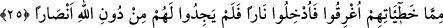

alçaltıcı bir azap vardır.” (Al-i, İmran, 3/178)
“Ben istiyorum ki sen hem benim günahımı hem de kendi günahını yüklenip
ateşe atılacaklardan olasın, zâlimlerin cezâsı işte budur.” (el-Mâide, 5/29)
Âlimler derler ki; Nûh (a.s.) babalarının ardından oğullarını ve torunlarını tam yedi
nesil îmâna dâvet etti. Ancak onların îmâna geleceklerinden ümidini kesince kendilerine
bedduâ etti.
25. Bunlar, günahları yüzünden suda boğuldular, ardından da ateşe sokuldular ve
o zaman Allah’a karşı yardımcılar da bulamadılar.
“Bunlar hatâları yüzünden suda boğuldular” Yâni Nûh kavminin günahları ve
doğruya muhâlif amelleri yâni küfür ve isyanları sebebiyle boğuldular. “Mâ”, câr ile
mecrûr arasında zâiddir ve “hatâları sebebiyle” ifâdesinin öne alınmasıyla oluşan hasr
mânâsını tekid etmektedir. Bu da şuna delâlet eder ki onların tûfân ile boğulmaları
başka bir şey için değil, sâdece hatâ ve günahları sebebiyledir. Bu mânâ da
müneccimlerin: “Tufân astronomik durumların bir gereği olarak meydana gelmiştir” gibi
sözlerini yalanlamaktadır. Bu tür sözler, âyet-i kerîmenin sarih mânâsına muhâlif olduğu
için küfürdür.
Âyette belirsizlik ifâde eden “ma” kelimesinin fazladan getirilmiş olmasında mânâyı
pekiştirmeden başka bir fayda daha vardır. O da o kâfirlerin işledikleri hatânın büyük
bir hatâ olduğunu vurgulamaktır. Buna göre âyetin mânâsı; “Bunlar o muazzam ve büyük
hatâları yüzünden suda boğuldular” şeklinde olur.
Âyette yer alan “mâ” kelimesinin zâid olduğu kanâatini taşımayan âlimler bunu nekre
olarak kabul etmişler ve “hatîâtihim” kelimesini ondan bedel yapmışlardır.
“Hatîât” kelimesi, “hatîe” kelimesinin çoğuludur. Kırâat imamlarından Ebû Amr bu
kelimeyi kesret lafzı ile “hatâyâhum” şeklinde okumuştur. Çünkü burada onların hatâ ve
günahlarının çokluğundan bahsedilmektedir. Tam bin sene küfür ve inkâr içinde
kalmışlardır. (Dolayısıyla ifâde de bu mânâya uygun olmalıdır.) Arapça dilbilgisi
kurallarına göre “hatîât” cem-i müennes sâlim’dir. Bu tip çoğullar, elde herhangi bir
karine olmaksızın on sayısından daha fazlaya delâlet etmez.
er-Rızâ’nın ifâdesinden zâhir olan odur ki cem-i sâlimlerle, cem-i teksirler azlığa ve
çokluğa bakılmaksızın mutlak olarak “çokluk” ifâde eder. Şu hâlde bu iki çoğul
biçiminin ikisi de -gerek az olsun gerek çok olsun- mutlak olarak “çokluk” ifâde ederler.
Bu sebeple âlimler derler ki: Bu iki çoğul kalıbı -çokluğun azı ve çoğu- ifâde etme
bakımından ortak kalıplardır. Bu görüşü savunan âlimler görüşlerine: “Şâyet
yeryüzündeki ağaçlar kalem, deniz de arkasından yedi deniz katılarak (mürekkep
olsa) yine Allah’ın sözleri yazmakla tükenmez.” (Lokman, 31/27) âyet-i kerîmesini